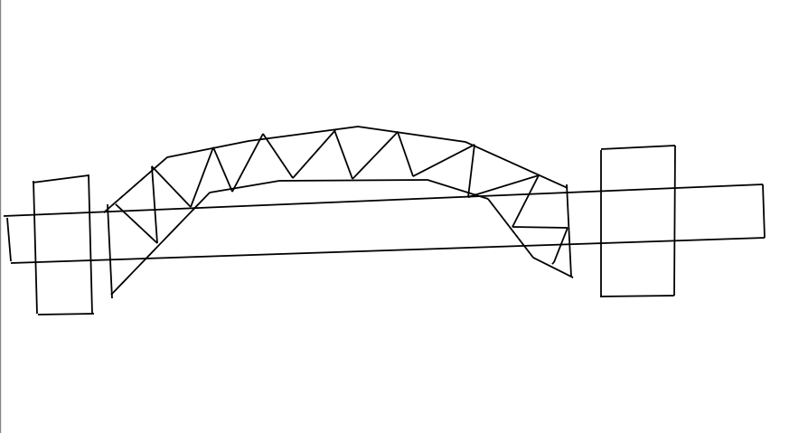

Multimédia
Sydney Opera House e Sydney Harbour Bridge:

Sydney Is City Of Beauty
Basim Alansari
Surrounded by many trees
It's not just a cuttie
Breathing lovely breeze
Sydney is beyond a town
It's full of life and spirit
For fun it's a crown
Serves its every resident

